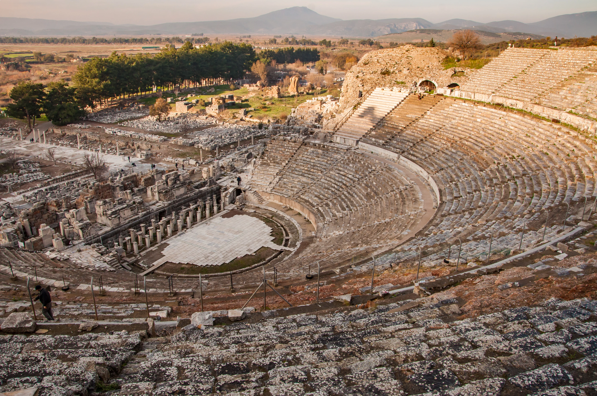

Day 1 - Arrival in Turkey
After a long flight, I finally landed in Istanbul! The moment I stepped off the plane, I was greeted by a city that pulses with life and history. Istanbul isn’t just a destination — it’s a living museum where ancient empires meet modern energy.
Even during the drive from the airport to my hotel, I could feel the unique rhythm of this place: sleek skyscrapers standing proudly beside centuries-old mosques, and the calls to prayer echoing through streets buzzing with cafés, shops, and friendly locals.
This city has been the heart of the Roman, Byzantine, and Ottoman empires — no wonder its cultural layers run so deep.
Day 2 - Exploring Istanbul
I started my morning walking through the historic streets of Sultanahmet, the heart of old Constantinople. Visiting the Hagia Sophia was simply breathtaking. Just across the square stands the Blue Mosque, equally stunning with its elegant minarets and İznik tiles.
I ended the day with a sizzling Turkish kebab — spicy grilled meat wrapped in soft bread with pickled veggies and a dash of sumac.
Day 3 - Grand Bazaar Adventure
I spent hours wandering through its labyrinthine corridors — over 4,000 shops! Bargaining with shopkeepers was a fun challenge. I left with a few meaningful gifts and souvenirs, each with its own story.
Day 4 - Epheseus City

Today I visited Ephesus, one of the most famous ancient cities in Turkey. Walking through the old stone streets felt like traveling back in time. I saw the ruins of temples, theaters, and houses that were thousands of years old. The Library of Celsus was my favorite part. Even though it is partly destroyed, it still looks very grand and beautiful. I also saw the big theater where people once watched plays and speeches.
It was amazing to imagine how people lived here so long ago. Ephesus showed me how rich Turkey’s history is, and it was one of the most interesting days of my trip.
Day 6 - Cappadocia Adventure

From Istanbul to the dreamlike skies of Cappadocia! After a short flight, I arrived in this surreal region filled with volcanic valleys and fairy chimneys.
Woke up before dawn for the hot air balloon ride — and wow. As we lifted into the sky, the sun rose behind the hills, lighting up dozens of balloons floating silently across the horizon. Below us: vineyards, cave homes, and twisted rock formations.
It felt like flying through a painting.